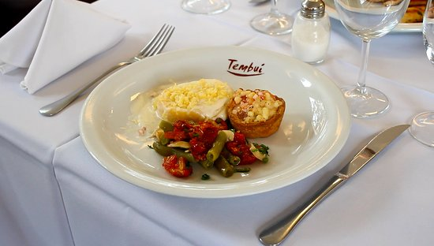
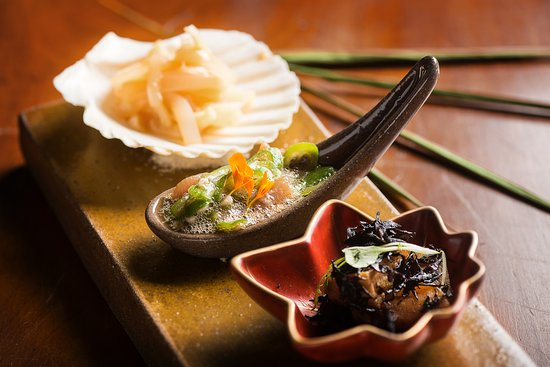
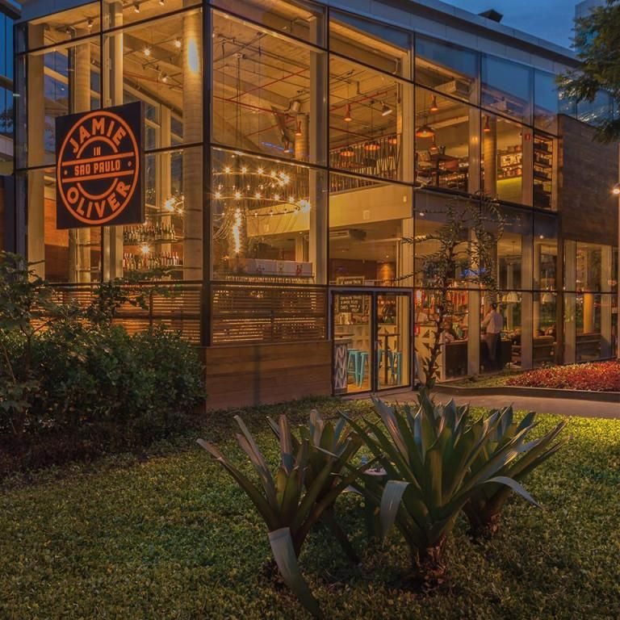
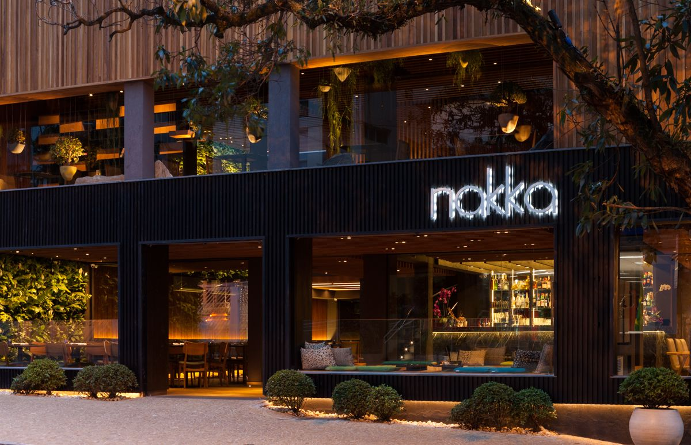
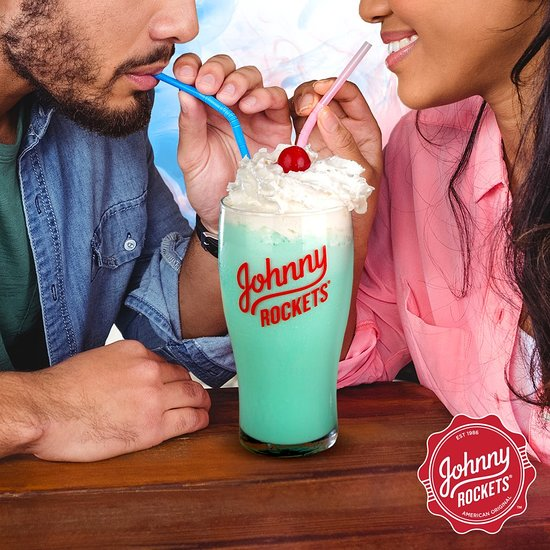
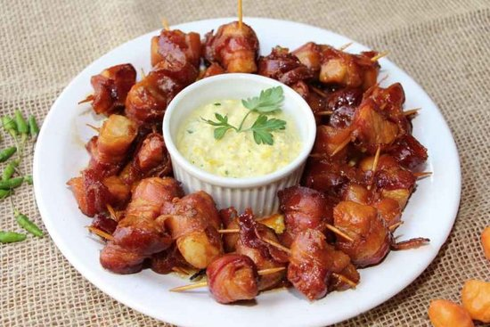

Resultados da busca por " "SÃO PAULO" "

Tambui Restaurantes
Rua Cláudio Soares 72, São Paulo, SP
3.213 avaliações

Ryo Gastronomia
Rua Pedroso Soares 72, São Paulo, SP
1.200 avaliações

Jaime Oliver
Avenida Horácio Lafer, 61, Itaim Bibi, São Paulo
10.609 avaliações

Nakka itaim
Rua Pedroso Alvarenga, 890 Itaim Bibi, São Paulo - SP
679 avaliações

Johnny Rockets Shopping Cidade Sp
Avenida Paulista 1230, Andar 4 Shopping Cidade De São Paulo, São Paulo
17.009 avaliações

Bar Quintal Da Mooca
Rua Lituania 454, São Paulo, Estado de São Paulo
29 avaliações